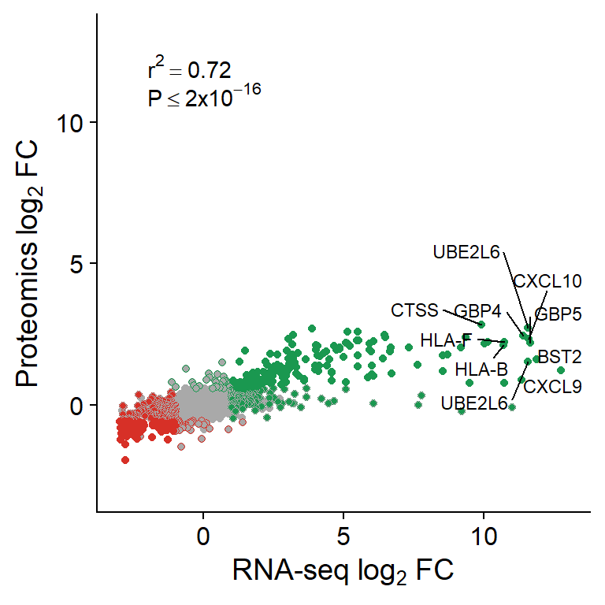
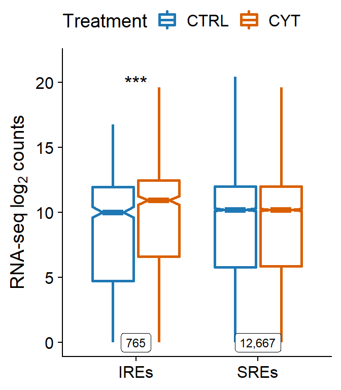
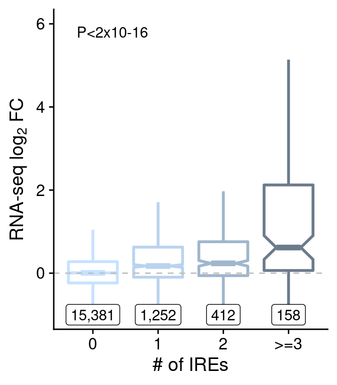
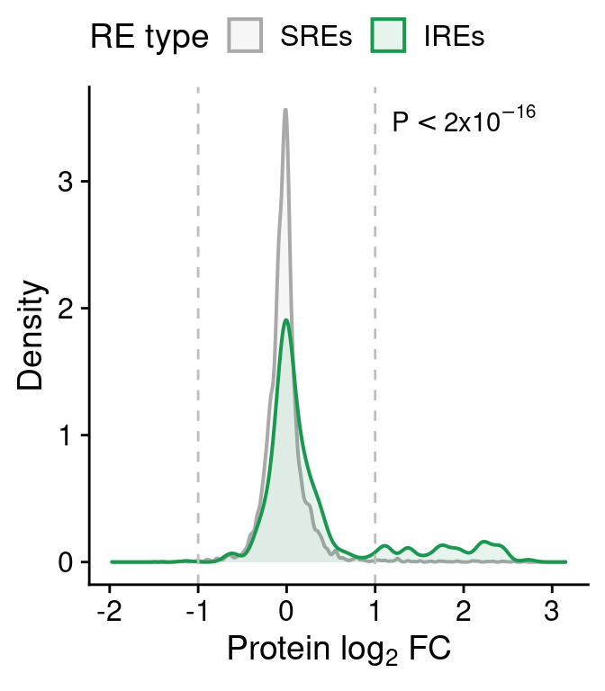
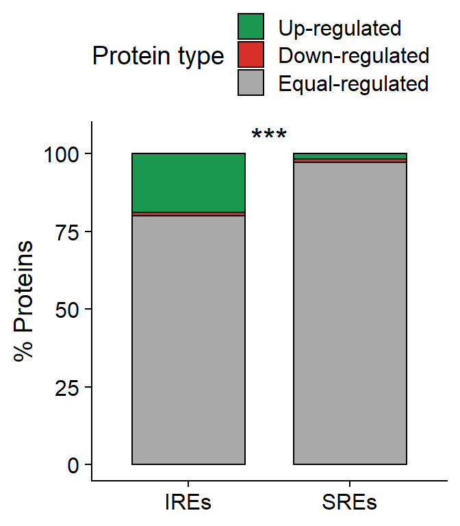

Rscript code/QC_CORR_genome.R data/CYT/RNA/BAM/ data/CYT/RNA/QC/ get_upper_tri <- function(cormat){
cormat[lower.tri(cormat)]<- NA
return(cormat)
}
get_lower_tri <- function(cormat){
cormat[upper.tri(cormat)]<- NA
return(cormat)
}load("../data/CYT/RNA/QC/COR_10kb_norm.rda")
cor.mat.ctrl <- get_lower_tri(cor(mat[,grep("ctrl", colnames(mat))], method="pearson"))
ctrl.m <- reshape2::melt(cor.mat.ctrl, na.rm=TRUE)
c.ctrl.RNA <-
ggplot(data = ctrl.m, aes(Var2, Var1, fill = value))+
geom_tile(color = "black", lwd=0.7)+
scale_fill_gradient2(low = "white", high = "slateblue4", mid = "skyblue2",
midpoint = 0.5, limit = c(0,1), space = "Lab",
name="Pearson\nCorrelation") +
geom_text(aes(label=round(value, 2)), size=3) +
theme_minimal() +
theme(axis.text.x = element_text(angle = 45, vjust = 1,
size = 12, hjust = 1),
axis.title=element_blank(),
panel.grid.major = element_blank(),
legend.position="none") +
coord_fixed() +
ggtitle("RNA-seq genome-wide correlation")
cor.mat.cyt <- get_upper_tri(cor(mat[,grep("cyt", colnames(mat))], method="pearson"))
cyt.m <- reshape2::melt(cor.mat.cyt, na.rm=TRUE)
c.cyt.RNA <-
ggplot(data = cyt.m, aes(Var2, Var1, fill = value))+
geom_tile(color = "black", lwd=0.7)+
scale_fill_gradient2(low = "white", high = "slateblue4", mid = "skyblue2",
midpoint = 0.5, limit = c(0,1), space = "Lab",
name="Pearson\nCorrelation") +
geom_text(aes(label=round(value, 2)), size=3) +
theme_minimal() +
theme(axis.text.x = element_text(angle = 45, vjust = 1,
size = 12, hjust = 1),
axis.title=element_blank(),
legend.justification = c(1, 0),
legend.position = c(0.6, 0.75),
legend.direction = "horizontal",
panel.grid.major = element_blank()) +
coord_fixed() +
guides(fill = guide_colorbar(barwidth = 7, barheight = 1,
title.position = "top", title.hjust = 0.5))
cor.rep.RNA <- plot_grid(c.ctrl.RNA, c.cyt.RNA)
cor.rep.RNARNA-seq correlation using the number of reads in a 10kb binned genome normalized with DESeq2.
cd data/CYT/RNA
Rscript ../../code/CYT_diffAnalysis_DESeq2_rna.R -f 1 -q 0.05 -b TRUE -s hi
Rscript ../../code/CYT_diffAnalysis_DESeq2_rna.R -f 1 -q 0.05 -b TRUE -s endocload("../data/CYT/RNA/diffAnalysis/RNA_endoc_GRangesBatch.rda")
as.data.frame(table(res.gr$type, res.gr$gene_biotype)) %>%
reshape2::dcast(Var1~Var2) %>%
as_tibble() %>%
mutate(Other = reduce(select(., !matches(c("Var1", "protein_coding"))), `+`)) %>%
select(Var1, protein_coding, Other) %>%
knitr::kable(format="html",
format.args = list(big.mark = ","),
col.names = c("Gene type", "Protein coding", "Other"),
caption = "Number of genes classified according to significance and biotype in RNA-seq EndoC samples.") %>%
kable_styling(full_width = FALSE) %>%
add_header_above(c(" " = 1, "Gene Biotype" = 2))| Gene type | Protein coding | Other |
|---|---|---|
| gained | 934 | 351 |
| lost | 811 | 185 |
| stable | 18,538 | 36,364 |
volc_ec <-
ggplot(data.frame(res.gr),
aes(log2FoldChange, -log10(padj))) +
geom_point(aes(color=type), size=0.4) +
scale_color_manual(values=pals$differential,
name="Gene type") +
geom_vline(xintercept=c(1,-1), linetype=2, color="dark grey") +
geom_hline(yintercept=-log10(0.05), linetype=2, color="dark grey") +
xlab(expression(Log[2]*" fold-change")) + ylab(expression(-Log[10]*" FDR adjusted P")) +
ggtitle(expression("RNA-seq EndoC-"*beta*H1)) +
theme(legend.position="none")load("../data/CYT/RNA/diffAnalysis/RNA_hi_GRangesBatch.rda")
as.data.frame(table(res.gr$type, res.gr$gene_biotype)) %>%
reshape2::dcast(Var1~Var2) %>%
mutate(Other = reduce(select(., !matches(c("Var1", "protein_coding"))), `+`)) %>%
select(Var1, protein_coding, Other) %>%
knitr::kable(format="html",
format.args = list(big.mark = ","),
col.names = c("Gene type", "Protein coding", "Other"),
caption = "Number of genes classified according to significance and biotype in RNA-seq HI samples.") %>%
kable_styling(full_width = FALSE) %>%
add_header_above(c(" " = 1, "Gene Biotype" = 2))| Gene type | Protein coding | Other |
|---|---|---|
| gained | 1,290 | 453 |
| lost | 1,081 | 524 |
| stable | 17,985 | 36,572 |
volc_hi <-
ggplot(data.frame(res.gr),
aes(log2FoldChange, -log10(padj))) +
geom_point(aes(color=type), size=0.4) +
scale_color_manual(values=pals$differential,
name="Gene type") +
geom_vline(xintercept=c(1,-1), linetype=2, color="dark grey") +
geom_hline(yintercept=-log10(0.05), linetype=2, color="dark grey") +
xlab(expression(Log[2]*" fold-change")) + ylab(expression(-Log[10]*" FDR adjusted P")) +
ggtitle(expression("RNA-seq HI")) +
theme(legend.position="none")plot_grid(volc_ec,
volc_hi,
ncol=2)Volcano plots showing RNA-seq genes in EndoC and human islet (HI) samples. The horizontal line denotes the FDR adjusted P-value threshold set at 0.05 and the vertical lines the log2 fold-change thresholds, at -1 and 1. Up-regulated genes are represented in green and down-regulated genes are shown in red.
load("../data/CYT/RNA/diffAnalysis/RNA_endoc_GRangesBatch.rda")
ec <- res.gr
load("../data/CYT/RNA/diffAnalysis/RNA_hi_GRangesBatch.rda")
hi <- res.gr
colnames(mcols(ec))[c(5,10)] <- paste0("endoc.", colnames(mcols(ec))[c(5,10)])
colnames(mcols(hi))[c(5,10)] <- paste0("hi.", colnames(mcols(hi))[c(5,10)])
df <- dplyr::left_join(data.frame(mcols(ec))[,c(1,5,10)],
data.frame(mcols(hi))[,c(1,5,10)])
ggplot(df,
aes(endoc.type, hi.log2FoldChange)) +
geom_boxplot(aes(color=endoc.type), notch=TRUE, outlier.shape=NA,
lwd=1) +
scale_color_manual(values=pals$differential,
name="Gene type") +
geom_hline(yintercept=c(1,0,-1), lty=c(2,1,2), color="grey") +
scale_y_continuous(name=expression("HI "*log[2]*" FC")) +
theme(legend.position="none",
strip.background = element_rect(fill="white", linetype=1, size=.5, color="black")) +
scale_x_discrete(name=expression("EndoC-"*beta*"H1 region type"),
labels=c("Up-regulated", "Down-regulated", "Equal-regulated")) +
coord_cartesian(ylim=c(-4,6))Boxplot of HI log2FC at genes classified as up-, down- or equal-regulated in EndoC cells. Horizontal dashed lines show the upper and lower log2 FC thresholds.
load("../data/CYT/Proteomics/proteomics_data_type.rda")
table(data$type)
gained lost stable
223 125 9818 volc.rna <-
ggplot(data.frame(data),
aes(log2FoldChange, -log10(pvalue))) +
geom_point(aes(color=type), size=0.7) +
scale_color_manual(values=pals$differential,
name="PROT type") +
geom_vline(xintercept=c(0.58,-0.58), linetype=2, color="dark grey") +
# geom_hline(yintercept=-log10(0.1), linetype=2, color="dark grey") +
xlab(expression(Log[2]*" fold change")) + ylab(expression(-Log[10]*" P")) +
ggtitle(expression("Proteomics EndoC-"*beta*H1)) +
theme_cowplot(18) +
theme(legend.position="none")
volc.rnaVolcano plot showing detected proteins classified as more abundant (green) or less abundant (red) after cytokine exposure in EndoC cells.
??
load("../data/CYT/RNA/diffAnalysis/RNA_endoc_GRangesBatch.rda")
load("../data/CYT/Proteomics/proteomics_data_type.rda")
colnames(data)[c(4,17)] <- paste0("prot.", colnames(data[c(4,17)]))
cor <- dplyr::left_join(data.frame(mcols(res.gr)[,c(1:3,5,10)]),
data[,c(9,4,17)])
colnames(cor)[4:5] <- paste0("rna.", colnames(cor)[4:5])
cor <- cor[!is.na(cor$prot.type),]
test <- cor.test(cor$rna.log2FoldChange, cor$prot.log2FoldChange)
cor <- cor[order(cor$rna.log2FoldChange+cor$prot.log2FoldChange, decreasing = T),]
cor$lab <- NA
cor$lab[1:10] <- cor$external_gene_name[1:10]
cor$rna.type <- factor(cor$rna.type, levels=c("stable", "lost", "gained"))
cor$prot.type <- factor(cor$prot.type, levels=c("stable", "lost", "gained"))
cor <- cor[order(cor$rna.type, cor$prot.type),]
cor.prot <-
ggplot(cor,
aes(rna.log2FoldChange, prot.log2FoldChange)) +
geom_point(aes(color=prot.type, fill=rna.type), pch=21) +
ggrepel::geom_text_repel(aes(label=lab), size=3) +
annotate("text", x=-2, y=12,
label=as.expression(bquote(r^2 == .(round(test$estimate, 2)))),
hjust=0) +
annotate("text", x=-2, y=11,
label=expression(P<=2*x*10^-16),
hjust=0) +
scale_fill_manual(values=pals$differential) +
scale_color_manual(values=pals$differential) +
scale_y_continuous(limits=c(-3,13),
name=expression("Proteomics "*log[2]*" FC")) +
scale_x_continuous(limits=c(-3,13),
name=expression("RNA-seq "*log[2]*" FC")) +
theme(legend.position="none")
cor.prot
Rscript code/CYT_annotate_RE_to_RNA_PROT.R -f 1 -q 0.05 -s endoc -w 30000
Rscript code/CYT_annotate_RE_to_RNA_PROT.R -f 1 -q 0.05 -s endoc -w 80000files <- list.files(out_dir,
pattern="RNA_annotation_endoc_",
full.names=TRUE)
names <- gsub("RNA_annotation_endoc_fc1_padj0.05_", "", gsub(".rda", "", basename(files)))
anno.counts.all <- data.frame()
anno.group.all <- data.frame()
for (i in 1:length(files)) {
load(files[i])
anno.counts$win <- names[i]
anno.counts.all <- rbind(anno.counts.all, anno.counts)
anno.group$win <- names[i]
anno.group.all <- rbind(anno.group.all, anno.group)
}
anno.counts.all$win <- factor(anno.counts.all$win,
levels=unique(anno.counts.all$win))
anno.group.all$win <- factor(anno.group.all$win,
levels=unique(anno.counts.all$win))
rm(anno.counts, anno.group, anno)files <- list.files(out_dir,
pattern="PROT_annotation_endoc_",
full.names=TRUE)
names <- gsub("PROT_annotation_endoc_fc1_padj0.05_", "", gsub(".rda", "", basename(files)))
anno.prot.all <- data.frame()
for (i in 1:length(files)) {
load(files[i])
anno.prot$win <- names[i]
anno.prot.all <- rbind(anno.prot.all, anno.prot)
}
anno.prot.all$win <- factor(anno.prot.all$win,
levels=unique(anno.prot.all$win))
rm("anno.prot")anno.counts.all <- unique(anno.counts.all[,-1])
test <- anno.counts.all %>%
group_by(type, win) %>%
summarise(pval=wilcox.test(counts[treatment=="ctrl"],
counts[treatment=="cyt"],
paired=F)$p.value,
num=length(counts[treatment=="ctrl"]))
test$lab <- ""
test$lab[test$pval<0.05] <- "*"
test$lab[test$pval<0.01] <- "**"
test$lab[test$pval<0.001] <- "***"
cor.rna <-
ggplot(anno.counts.all[anno.counts.all$win=="win30000",],
aes(type, log2(counts + 1))) +
geom_boxplot(aes(color=treatment), notch=TRUE,
outlier.shape=NA, lwd=1) +
geom_text(data=test[test$win=="win30000",],
aes(x=type, y=20, label=lab),
size=5) +
geom_label(data=test[test$win=="win30000",],
aes(x=type, y=0, label=scales::comma(num)),
size=3) +
scale_color_manual(values=pals$treatment,
name="Treatment", labels=function(x) toupper(x)) +
scale_x_discrete(labels=function(x) paste0(x, "s")) +
ylab(expression("RNA-seq "*log[2]*" counts")) +
theme(legend.position="top",
axis.title.x=element_blank())
cor.rna
nums <- anno.group.all %>%
group_by(win, group) %>%
summarise(num=length(log2FoldChange))
group.rna <-
ggplot(anno.group.all[anno.group.all$win=="win80000",],
aes(group, log2FoldChange)) +
geom_boxplot(aes(color=group), notch=T, outlier.shape=NA, lwd=1) +
scale_color_manual(values=c("slategray1", "slategray2", "slategray3", "slategray4")) +
geom_label(data=nums[nums$win=="win80000",],
aes(group, y=-1, label=scales::comma(num))) +
geom_hline(yintercept=0, lty=2, color="grey") +
scale_y_continuous(name=expression("RNA-seq "*log[2]*" FC"), limits=c(-1,6)) +
annotate("text", 1.3, 5.8, label="P<2x10-16") +
xlab("# of IREs") +
theme(legend.position="none")
group.rna
test <- wilcox.test(anno.prot.all$prot.log2FoldChange[anno.prot.all$win=="win30000" &
anno.prot.all$type=="IRE"],
anno.prot.all$prot.log2FoldChange[anno.prot.all$win=="win30000" &
anno.prot.all$type=="SRE"])
prot.distr <-
ggplot(anno.prot.all[anno.prot.all$win=="win30000",],
aes(prot.log2FoldChange)) +
geom_density(aes(fill=type, color=type), alpha=0.1, lwd=.7) +
scale_fill_manual(values=pals$re, name="RE type",
labels=function(x) paste0(x, "s")) +
scale_color_manual(values=pals$re, name="RE type",
labels=function(x) paste0(x, "s")) +
geom_vline(xintercept=c(-1,1), lty=2, color="grey") +
annotate("text", 2, 3.5, label=expression(P<2*x*10^{-16})) +
xlab(expression("Protein "*log[2]*" FC")) + ylab("Density") +
theme(legend.position="top")
prot.distr
anno.prot.all$type <- factor(anno.prot.all$type, levels=c("IRE", "SRE"))
prot.bar <-
ggplot(anno.prot.all[anno.prot.all$win=="win30000",],
aes(type, ..count..)) +
geom_bar(aes(fill=prot.type),
position="fill", color="black", width=0.7) +
scale_fill_manual(values=pals$differential,
name="Protein type",
labels=c("Up-regulated", "Down-regulated", "Equal-regulated")) +
annotate("text", 1.5, 1.05, label="***", size=6) +
scale_y_continuous(labels=function(x) x*100,
name="% Proteins") +
scale_x_discrete(labels=function(x) paste0(x, "s")) +
theme(legend.position="top",
axis.title.x=element_blank()) +
guides(fill=guide_legend(ncol=1))
prot.bar
sessionInfo()R version 4.0.0 (2020-04-24)
Platform: x86_64-w64-mingw32/x64 (64-bit)
Running under: Windows 10 x64 (build 18362)
Matrix products: default
locale:
[1] LC_COLLATE=Spanish_Spain.1252 LC_CTYPE=Spanish_Spain.1252
[3] LC_MONETARY=Spanish_Spain.1252 LC_NUMERIC=C
[5] LC_TIME=Spanish_Spain.1252
attached base packages:
[1] parallel stats4 stats graphics grDevices utils datasets
[8] methods base
other attached packages:
[1] purrr_0.3.4 dplyr_1.0.0 kableExtra_1.1.0
[4] cowplot_1.0.0 ggplot2_3.3.1 GenomicRanges_1.41.1
[7] GenomeInfoDb_1.25.0 IRanges_2.23.5 S4Vectors_0.27.8
[10] BiocGenerics_0.35.2 workflowr_1.6.2
loaded via a namespace (and not attached):
[1] Biobase_2.49.0 httr_1.4.1
[3] bit64_0.9-7 viridisLite_0.3.0
[5] splines_4.0.0 highr_0.8
[7] blob_1.2.1 GenomeInfoDbData_1.2.3
[9] ggrepel_0.8.2 yaml_2.2.1
[11] pillar_1.4.4 RSQLite_2.2.0
[13] backports_1.1.7 lattice_0.20-41
[15] glue_1.4.1 digest_0.6.25
[17] RColorBrewer_1.1-2 promises_1.1.0
[19] XVector_0.29.1 rvest_0.3.6
[21] colorspace_1.4-1 plyr_1.8.6
[23] htmltools_0.5.0 httpuv_1.5.3.1
[25] Matrix_1.2-18 DESeq2_1.29.4
[27] XML_3.99-0.3 pkgconfig_2.0.3
[29] genefilter_1.71.0 zlibbioc_1.35.0
[31] xtable_1.8-4 scales_1.1.1
[33] webshot_0.5.2 later_1.0.0
[35] BiocParallel_1.23.0 git2r_0.27.1
[37] tibble_3.0.1 annotate_1.67.0
[39] farver_2.0.3 generics_0.0.2
[41] ellipsis_0.3.1 withr_2.2.0
[43] SummarizedExperiment_1.19.4 survival_3.1-12
[45] magrittr_1.5 crayon_1.3.4
[47] memoise_1.1.0 evaluate_0.14
[49] fs_1.4.1 xml2_1.3.2
[51] tools_4.0.0 hms_0.5.3
[53] lifecycle_0.2.0 matrixStats_0.56.0
[55] stringr_1.4.0 locfit_1.5-9.4
[57] munsell_0.5.0 DelayedArray_0.15.1
[59] AnnotationDbi_1.51.0 compiler_4.0.0
[61] rlang_0.4.6 grid_4.0.0
[63] RCurl_1.98-1.2 rstudioapi_0.11
[65] labeling_0.3 bitops_1.0-6
[67] rmarkdown_2.3 gtable_0.3.0
[69] DBI_1.1.0 reshape2_1.4.4
[71] R6_2.4.1 knitr_1.28
[73] bit_1.1-15.2 rprojroot_1.3-2
[75] readr_1.3.1 stringi_1.4.6
[77] Rcpp_1.0.4.6 geneplotter_1.67.0
[79] vctrs_0.3.0 tidyselect_1.1.0
[81] xfun_0.14